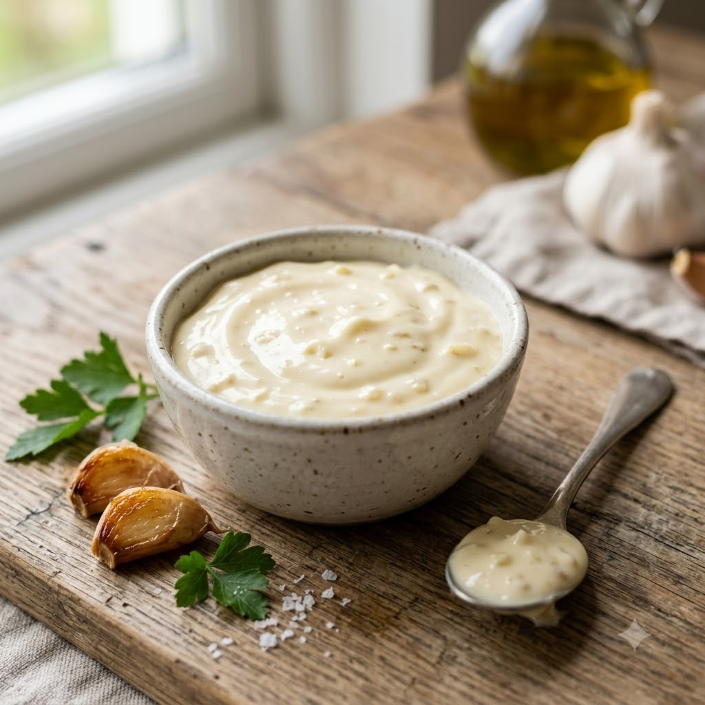

Garlic Mayo (Aioli-Style)

Garlic Mayo (Aioli-Style)
No-Cook – Mix + Rest 30 min — Makes ~1 cup
Gluten-Free • Vegetarian • No-Cook Finish • Homemade
Ingredients
- 1 cup Classic Eggless Mayonnaise (or store-bought)
- 4 cloves garlic (lehsun), finely grated or crushed
- 1 tsp lemon juice
- 1/2 tsp black pepper (kali mirch)
- Salt to taste
Method
1In a bowl, combine the mayonnaise with the grated garlic.
2Stir in the lemon juice, black pepper and salt, mixing until fully combined.
3Cover and refrigerate for at least 30 minutes to let the garlic flavour infuse before serving.
Tip: For a milder, sweeter garlic flavour, lightly sauté the garlic in a teaspoon of oil for 1 minute before stirring it in.